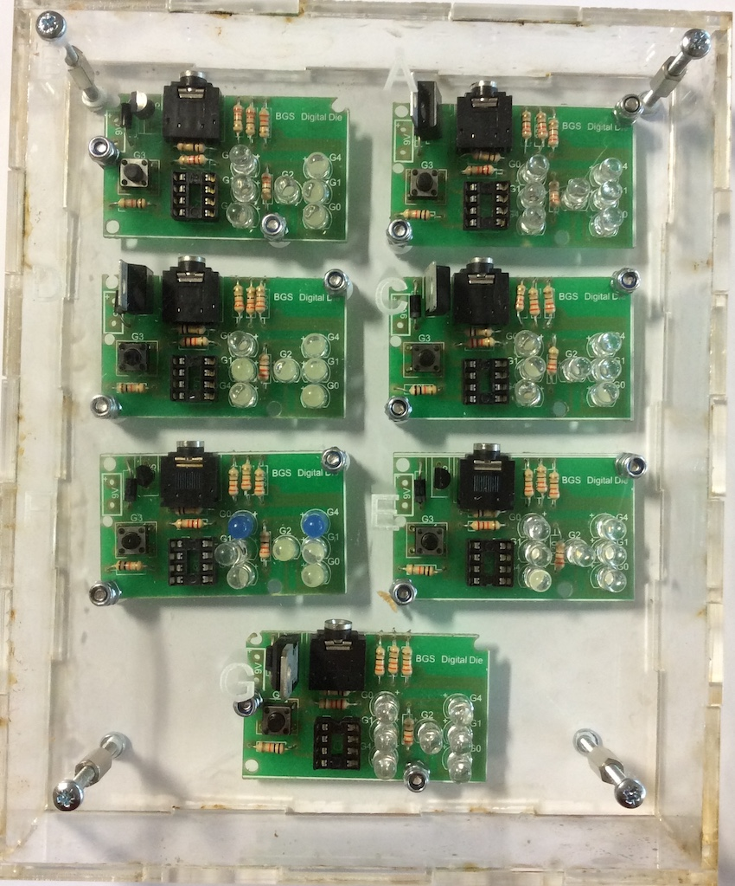
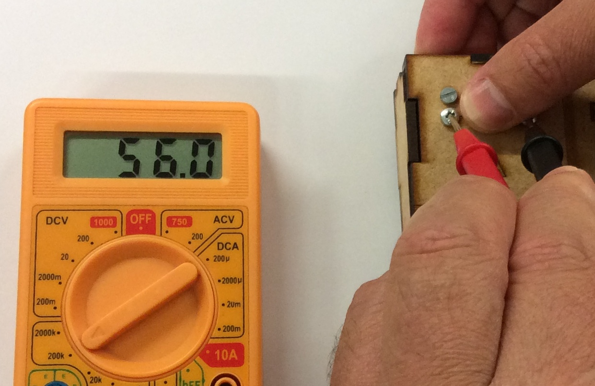
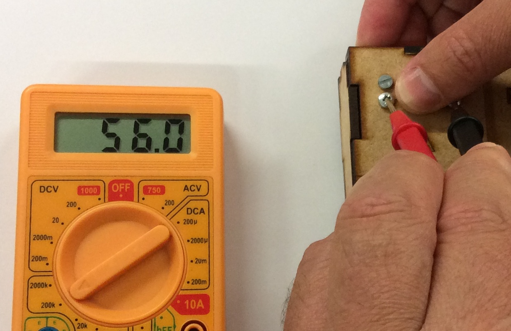

The Puzzle Boxes
Table of Contents

1 Introduction
- Over the past year, you learned about electronics by making different projects that have been supplied to you. In this unit, you'll be equipped with diagnostic skills to further improve your ability to fix problems with circuits when they occur, to create and upload original programs to circuits and to create circuits without having to use the chemical etch tank.
- If you want some additional help, try reading through this short guide to using a multimeter.
The puzzle boxes and Boards
- There are 7 different circuit boards labelled A - G with faults on them. There are also 3 different puzzle boxes with components to test, labelled C,H,I. Inside the boxes are components, soldered to Machine screws (bolts with screwdriver heads). You will need to use the different settings on the multimeter as well as your ingenuity and knowledge of electronics to test the contents of each.

- The PCB's have a number of faults on them, here is a list of the possible faults you will find:
- Voltage regulator is the wrong way around.
- There is a dry joint (the solder does not go all the way around the component).
- A track has been lifted off the board.
- The 8-pin Chip carrier is the wrong way around.
- There is a short circuit (components that are not supposed to be joined are connected).
- There is an LED the wrong way around.
- Diode is the wrong way around.
- Open a .txt (NotePad) file and record which board has which fault.
- Now move onto the puzzle boxes below and record your findings in the same .txt file.
Box C: An LDR and something else is in here. LDRs typically have a resistance value from 400 to 2M (2 million) Ohms, depending on the amount they are exposed to: More light = less resistance.
i. Read the resistance across the LDR, and write it down.
 ii. Put your finger over the LDR and read the resistance again.

iii. What is the value of the other resistor in the box?
ii. Put your finger over the LDR and read the resistance again.

iii. What is the value of the other resistor in the box?
Box H: The component in here is called a potentiometer. By turning the dial, the resistance between its 3 pins can be changed.
i. What is the resistance between pins 1 and 3?
ii. Turn the dial to face pin 2. What is the resistance between pins 1 and 2? What is the resistance between 2 and 3? What number do you get when these values are added together?
iii. Turn the potentiometer wiper to the left and right notches marked near the dial and measure the resistance at each point.
Box I: The green component is called a thermistor(Thermal Resistor). Its resistance changes in response to temperature.
i. The thermistor is wired between two of the screws, as is a normal resistor. Work out how the box is wired up. ii. *(tip: You should be able to put your finger lightly on the thermistor to make its resistance change).
Badge It Silver
- Correctly complete 3 of the 'board fault' tasks and 1 of the 'puzzle box' tests.
Badge It Gold
- Correctly complete 5 of the 'board fault' tasks and 2 of the 'puzzle box' tests.
Badge It Platinum
- Correctly complete all of the 'board fault' tasks and all of the 'puzzle box' tests.